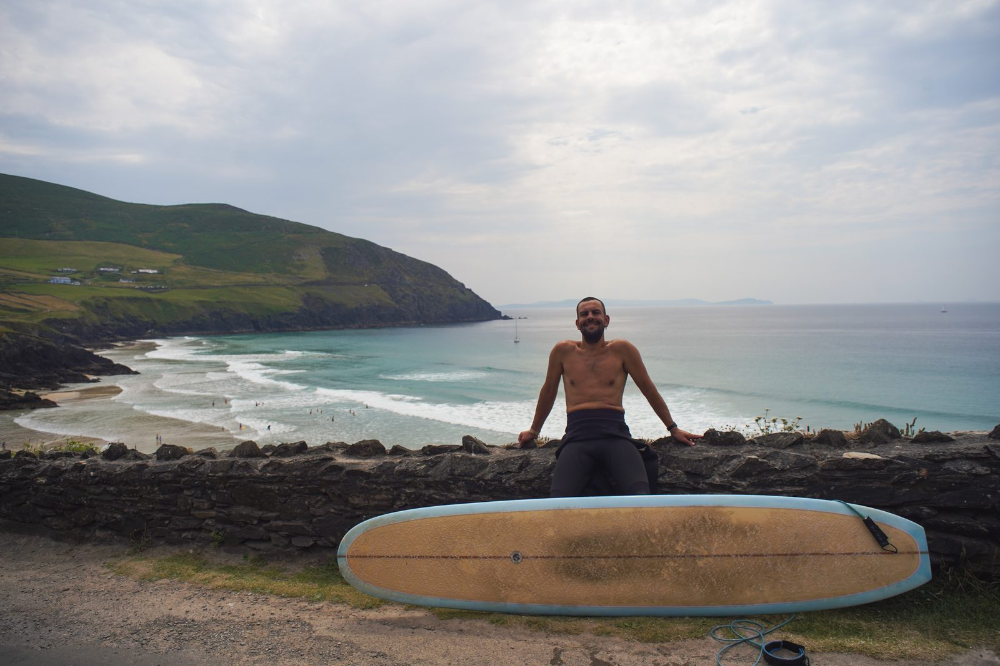
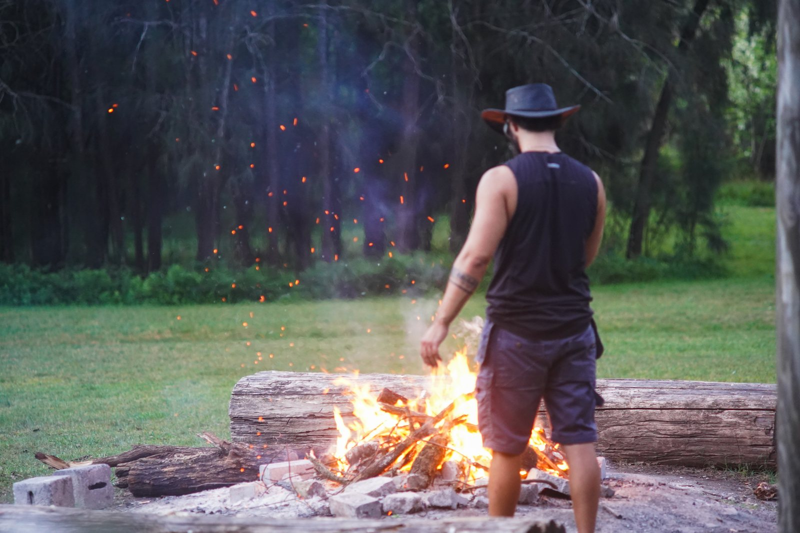

Wildly Calm
Writing from the people behind Wildly Calm.
Latest

A poem
On a hard conversation with his dad, his first trip to Ireland as an adult, and the poem he wrote on the flight out.
Kieran Maguire · 22 October 2026
Read it
An essay
Men and women are being sold stories about each other. The first AI most of us lived with was built to sell them. What should the next one be built for?
Sam Davis · September 2026
Read it